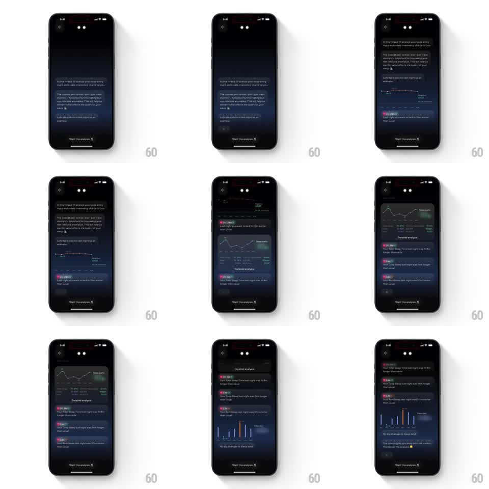

Media
Frame-by-frame

Rebuild this interaction 1:1: Remy AI's analysis chat - the conversation reveals itself message by message, auto-scrolling as text bubbles, insight cards, and charts stack into the thread.

Rebuild this interaction 1:1: Remy AI's analysis chat - the conversation reveals itself message by message, auto-scrolling as text bubbles, insight cards, and charts stack into the thread.
## Integration
Integration: stack-agnostic spec - springs given as stiffness/damping, timed motions as duration + curve; map every value to your framework and animation library of choice.
## Scene
A dark chat thread with the AI analyst: intro text bubbles explaining the analysis, a sleep-trend line chart card, a "Detailed analysis" card with a comparison graph, insight rows with colored icons and delta chips ("Your Total Sleep Time last night was 5h 8m longer than usual"), and a bar chart card, over a pinned "Start the analysis" button.
## Motion spec
Pattern: staggered auto-scrolling chat reveal, ~4s.
- The first text bubble rises and fades in (300ms); the thread auto-scrolls to keep the newest message in view (smooth 250ms scroll per step).
- The chart card follows: it rises (300ms) and its line graph draws left to right (600ms, ease-in-out).
- Insight rows stack in one at a time (250ms each, 150ms stagger), each with its icon, text, and colored delta chip fading in as a unit.
- The comparison and bar charts draw on entry like the first (bars rising 300ms each with a 40ms internal stagger).
- The thread keeps auto-scrolling until the final card settles; the pinned button stays fixed at the bottom.
## Calibration
- The reveal cadence is conversational - pauses of 300-400ms between messages, quicker between rows inside a card.
- Charts draw only when scrolled into view, never before.
## Reduced motion
Thread appears fully rendered.
## Don't miss
- Delta chips are colored (green positive, red negative) with small trend arrows.
- The auto-scroll eases; it never jumps to the bottom.